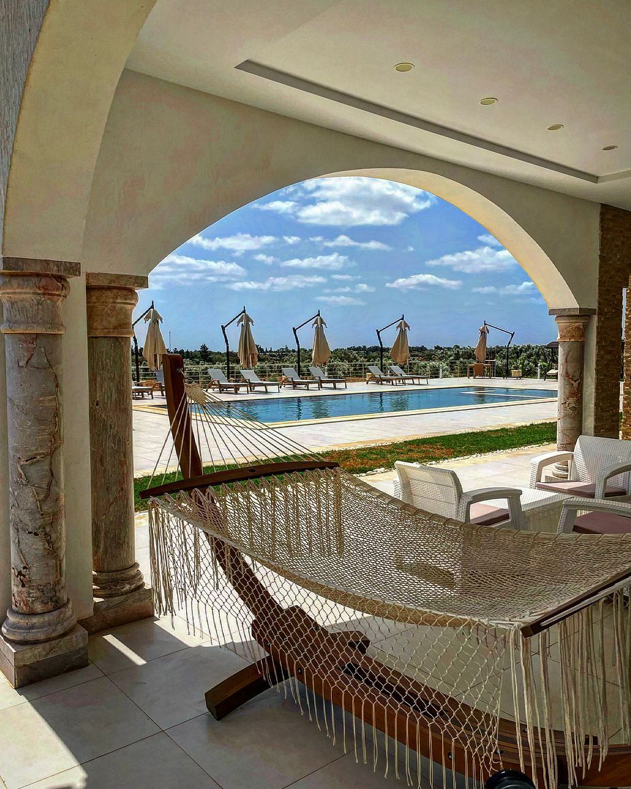

Tazarka, au cœur de la région du Cap Bon
Entre Korba et Nabeul, à quelques minutes des plages de sable fin, Dar Aïcha profite d'une situation privilégiée dans le gouvernorat de Nabeul, aussi appelé Cap Bon.

Tazarka, un village côtier du Cap Bon
Tazarka se trouve à flanc de colline, à une vingtaine de kilomètres au nord de Nabeul, dans une zone connue pour ses longues plages de sable fin (Wikipédia — Korba). Le village dépend administrativement de la délégation de Korba, dans le gouvernorat de Nabeul — la région historiquement désignée « Cap Bon », qui regroupe aussi Hammamet, Kélibia, Menzel Temime, Soliman et le site antique de Kerkouane, classé à l'UNESCO (Wikipédia — Cap Bon).
Comment venir jusqu'à Dar Aïcha
La propriété est accessible depuis les deux principaux aéroports du nord-est tunisien.
Aéroport de Tunis-Carthage
Environ 75 à 85 km, soit 1h15 à 1h30 de route jusqu'à Tazarka (Rome2Rio).
Aéroport d'Enfidha-Hammamet
Environ 50 à 55 km depuis Nabeul, soit environ 40 minutes de route (Drivo Tunisie).
Nabeul
Chef-lieu du gouvernorat, à une vingtaine de kilomètres de Tazarka, avec son grand marché et ses ateliers de poterie.
Le Cap Bon, entre mer, artisanat et patrimoine
Nabeul & sa poterie
À environ 20 km, Nabeul est réputée pour son marché et ses ateliers de céramique et de poterie traditionnelle, à environ 1h de l'aéroport de Tunis-Carthage (Rome2Rio).
Hammamet
Station balnéaire historique du Cap Bon, sa médina et ses plages se trouvent à quelques kilomètres au sud de Nabeul (Wikipédia — Gouvernorat de Nabeul).
Kélibia & Kerkouane
Plus au nord, Kélibia (environ 55 km de Nabeul) et le site antique punique de Kerkouane, classé à l'UNESCO, complètent la découverte du Cap Bon (Tunisie.co — Kélibia).
4 hectares entre oliveraie, jardins et villa


Tazarka, Korba, gouvernorat de Nabeul
Prêt à découvrir le Cap Bon depuis Dar Aïcha ?
Séjour, réception privée ou simple visite de la propriété — contactez-nous pour organiser votre venue.